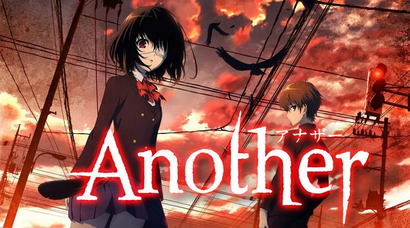

Ce quizz porte sur la cutlure général des animes/mangas
Question 1 / 15
Quel est le nouveau manga lancé en mai 2019 de Masahi kishimoto (naruto) ?
Question 2 / 15
En quelle année est sortie le premier épisode de One piece ?
Question 3 / 15
Dans Code Geass, sous quel pseudonyme Lelouch combat-il

Question 4 / 15
Dans Parsite, comment s'appelle le parasite accroché à Shinichi Izumi ?

Question 5 / 15
Dans violet evergarden, quel est le nouveau métier de Violet ?
Question 6 / 15
(Spoil) Dans Your Name, qu'est ce qu'écrit Mitsuha Miyamizu dans la main de Taki Tachibana ?

Question 7 / 15
Dans kuroko no Basket, quelle est la particularité de kuroko?

Question 8 / 15
Dans classroom of the elite, pourquoi Kiyotaka Ayanokoji at-il fais expères d'avoir 50/100 à ses notes ?

Question 9 / 15
Dans your lie in april, pour Arima Kosei a t-il arrété de joué du piano ?

Question 10 / 15
Dans Erased, comment élement signifie le retour dans le temps de Satoru ?
Question 11 / 15
(Spoil)Dans another, pourquoi des personnes de la classe décède (le parapluie) (vous l'avez?) (si non, n'allez pas voir) ?

Question 12 / 15
Dans Silent voice, que fait Shoya Ishdida lorsque qu'il recroise Shouko Nishimiya ?
Question 13 / 15
Dans blue exorcist, pour le père de Rin a été possédé par Satan ?

Question 14 / 15
(Spoil)Dans the promised neverland, qui été le traître dans la ferme ?

Question 15 / 15
Dans fire force, de quelle génération est le capitaine de la 8ème brigade (ou shinra/arthur) ?